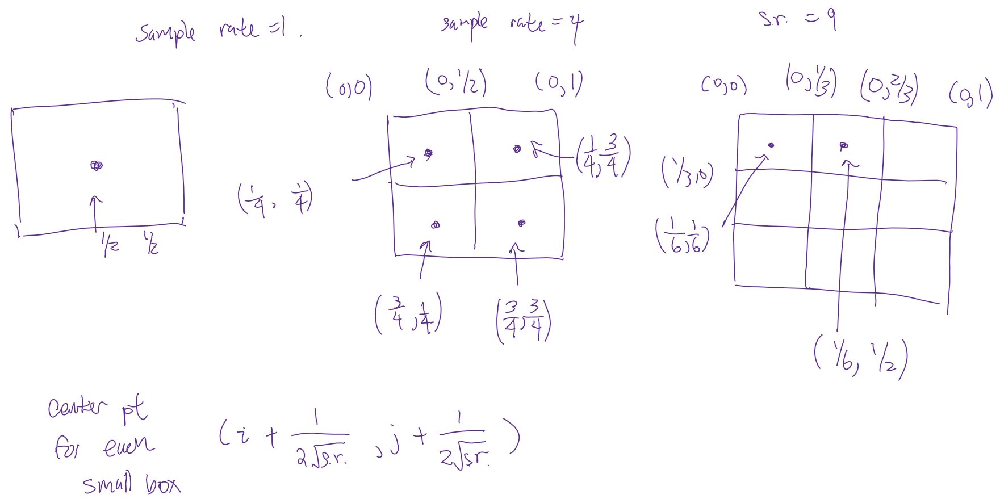
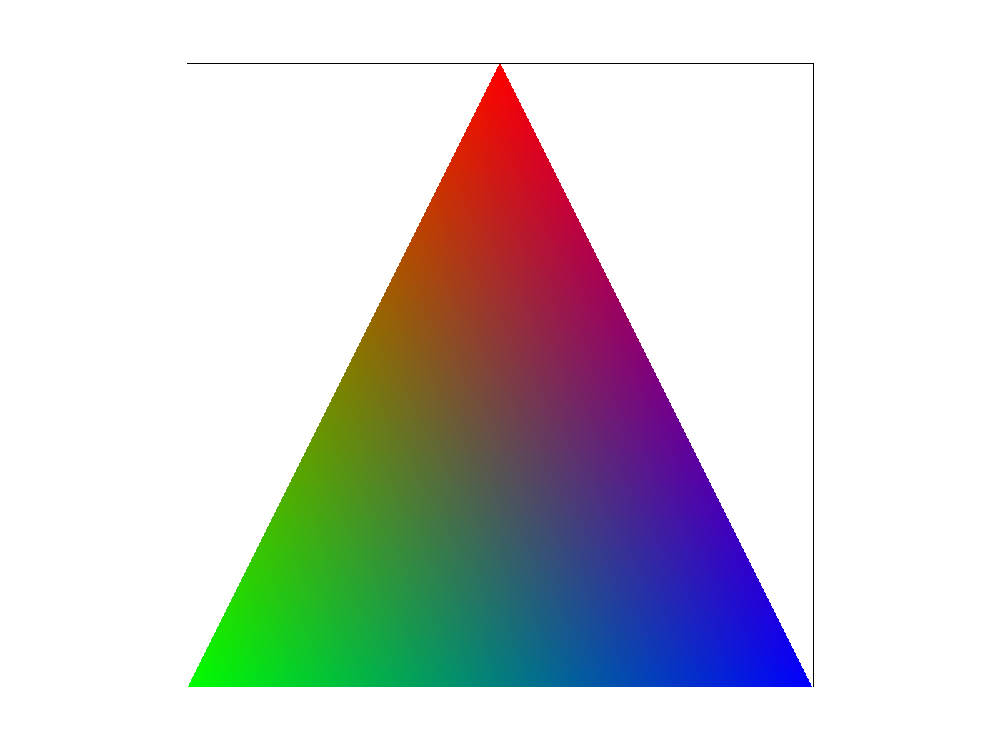
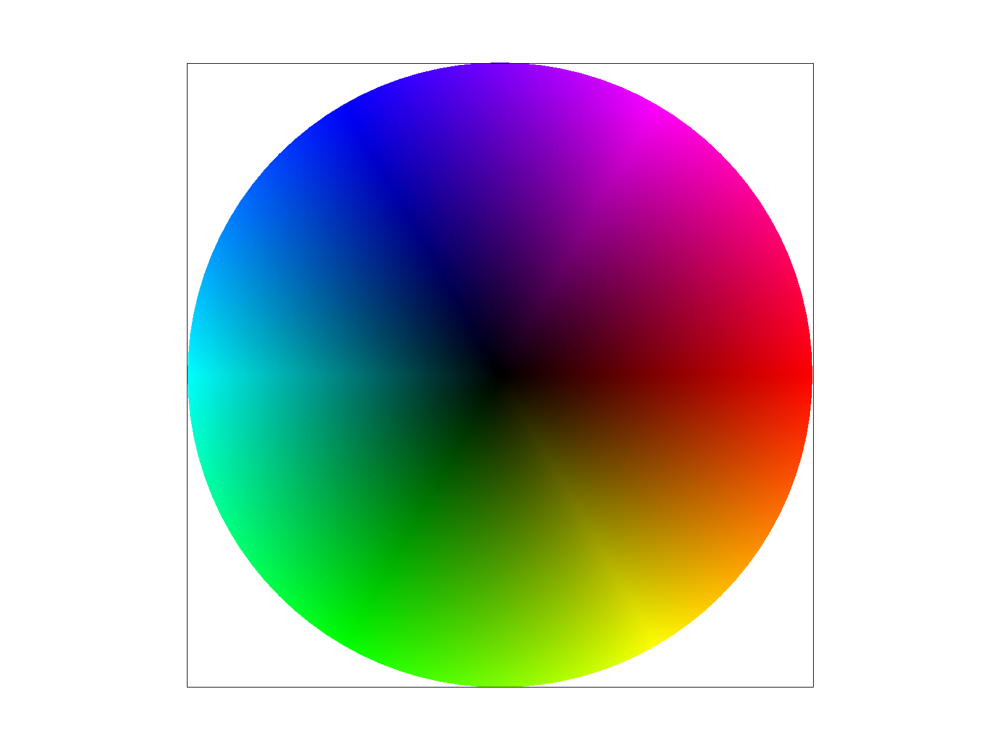
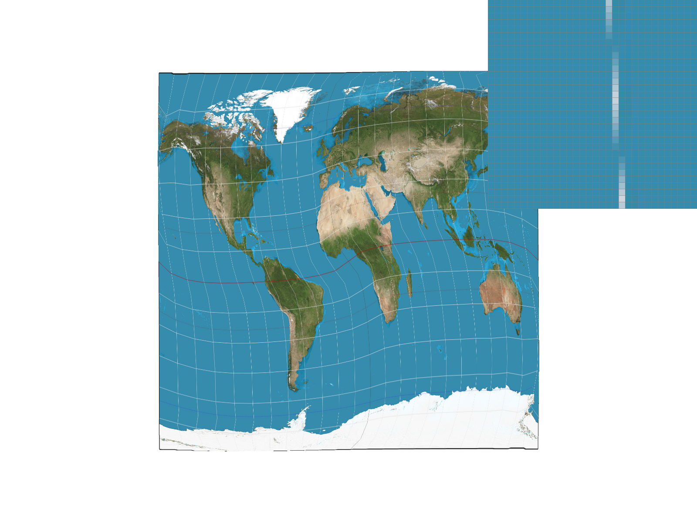
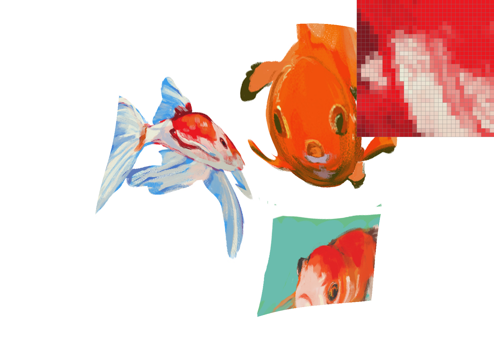

Overview
This rasterizer is able to take in SVG files and render it in an adjustable UI.
Features include rasterizing single color triangles, bayecentric interpolated triangles,
supersampling algorithm for antialiasing, transform functions (translate, scale, and rotate),
pixel sampling and level sampling with mipmaps for texture mapping.
Overall, this was a fun project and we enjoyed learning about rasterization and were surprised by how complex
it is just to display many triangles on our screens.
Task 1: Drawing Single-Color Triangles
In the first part of the project. We implemented basic triangle rasterization, which means we want to fill
triangles in an SVG file with a color. Given the vertices, \((x_{i}, y_{i})\), and color for a triangle, we first
iterate through each point in a rectangle bounded by the edges of the triangle. Next we use the 3 line test
written below to determine if the current point is actually inside the triangle before filing in that pixel. For
\(i\) from 0 to 2,
$$L_{i} = -(x-x_{i})*\Delta y_{i}+(y-y_{i})*\Delta x_{i}$$
If the value of \(Li \ge0\) (or \(Li \le 0\) if the order of triangle vertices are given counterclockwise)
for all three points, then the point is in the line. The x and y indices fed into the equation were incremented by
0.5 each to get the center of the corresponding pixel for an accurate line test.
Our algorithm is no less worse than one that checks each sample within the bounding box of the triangle
because it does exactly that. We find the minimum and maximum of each (x, y) value and iterate over that.
 Rasterized Triangles.
Rasterized Triangles.
An attempt was made to use OpenMP
#pragma omp for commands before for loops to speed up our
calculations, but the timing results showed no noticeable improvement.
We also brainstormed an idea of speeding up rasterization using a sliding tile method.
In this method, we would loop from the left until a find a point within the triangle then loop
from the right until a find a point within the triangle. Then we know that every point between
these two is inside the triangle and we can skip the arithmetic. This would save us computation roughly
equal to sampling every point within the triangle.
| Naive |
"Optimized" |
| 0.268050667 |
0.245115 |
| 2.651900667 |
2.548970333 |
Task 2: Antialiasing by Supersampling
In the next part of our project, we implemented supersampling on top of our basic triangle rasterization.
Supersampling is useful for antialiasing in images. Often times we get jaggies and unwanted sharp edges on our
image. This can be solved by sampling more than we need, then downsampling by averaging to ‘smooth out’ the
jaggedness. The more samples we take, the less jaggies the end result has.
We made several changes to our rendering pipeline to accommodate supersampling. First, all functions that
resize the temporary sample buffer had to get a multiplication factor by our sample rate to fit all of our
samples. In our rasterization function, RasterizerImp::rasterize_triangle(), we nested two more for
loops to take more samples at each pixel location. Again, to obtain the center of each subpixel, we had to add an
increment to each point.

Brainstorming process for oversampling implementation
In order to downsample our sample buffer, RasterizerImp::resolve_to_framebuffer() was modified to
average out every sample_rate number of points into one color, before inserting into the final RGB
frame buffer array. Our results successfully showed that supersampling decreased the amount of jaggies as the
sampling rate was increased.
|
1 Sample Per Pixel
|
 4 Samples Per Pixel
4 Samples Per Pixel
|
 9 Samples Per Pixel
9 Samples Per Pixel
|
 16 Samples Per Pixel
16 Samples Per Pixel
|
Task 3: Transforms
In this section we implemented transforms using the matrices. We are able to translate \(\textbf{T}(t_x,t_y)\),
rotate \(\textbf{R}(\alpha)\), and scale \(\textbf{S}(s_x,s_y)\) polygons. An application of these transformations
is manipulating “cubeman” in which we made him dance the naenae. The transformation matrices are listed below.
$$\textbf{T}(t_x,t_y)=\begin{pmatrix}
1& 0& t_x\\
0& 1& t_y\\
0& 0& 1\\
\end{pmatrix}$$
$$\textbf{R}(\alpha)=\begin{pmatrix}
\cos(\alpha)& -\sin(\alpha)& 0\\
\sin(\alpha)& \cos(\alpha)& 0\\
0& 0& 1\\
\end{pmatrix}$$
$$\textbf{S}(s_x,s_y)=\begin{pmatrix}
s_x& 0& 0\\
0& s_y& 0\\
0& 0& 1\\
\end{pmatrix}$$
 nae nae
nae nae
Task 4: Barycentric coordinates
Barycentric coordinates are special homogeneous coordinates that can help us get smooth transition values for the
colors in our triangles when rasterizing. We can linearly interpolate (aka lerp) between each pair of vertices’
associated color. The image below shows a smooth blended color triangle. The vertices of the triangle are pure
RGB colors, and as we move away from the vertices, the colors become a blend of the 3 colors with each color
intensity proportional to the distance away from the vertices. The circle below is also an interpolation across
color hues and darkness values.
We build upon our previous rasterization algorithm by adding the ability to rasterize interpolated color
triangles. Based on the location in the triangle, we solve for the color ratios: \(\alpha\), \(\beta\), and
\(\gamma\), before multiplying them with their respective colors to obtain the final color values in the triangle.
$$V = \alpha V_A + \beta V_B + \gamma V_C$$
|

Gradient triangle.
|

Gradient circle.
|
Task 5: "Pixel sampling" for texture mapping
Pixel sampling is mapping pixels from one image to another (can be differing sizes).
We implemented pixel sampling for texture mapping by taking the color at the (u, v)
coordinate in our texture map and mapping it to the (x, y) coordinate in our screen space.
The two sampling methods we implemented are nearest sampling and bilinear sampling.
Nearest sampling simply outputs the color of the nearest pixel. This is done by rounding the (u, v) coordinate.
Bilinear sampling takes the 4 nearest sample locations and returns a weighted average color based on location.
This is
done through linear interpolation vertically, horizontally, and finally between the previous results.
 Nearest Sampling, 1 Sample Per Pixel
Nearest Sampling, 1 Sample Per Pixel
|
 Nearest Sampling, 16 Samples Per Pixel
Nearest Sampling, 16 Samples Per Pixel
|
|

Bilinear Sampling, 1 Sample Per Pixel
|
Bilinear Sampling, 16 Samples Per Pixel
|
We observed some differences between the two sampling methods. Bilinear sampling tends to give a blurrier result
due to averaging out values, which we can see in the images above. Nearest sampling only clips to the closest
color for a pixel result, which results in sharper edges in the images, but also more jaggies. In terms of
computation, bilinear will be more costly. This is especially true when computing images of large dimension for
bilinear sampling, since we are sampling four times as many locations, and also performing three lerps to obtain a
weighted average final result.
On images with lower resolution, there will be large differences since nearest ignores surrounding pixels with an
already low sample size.
On images with larger resolutions, these differences are less noticeable since averages become less useful with
larger sample sizes.
Task 6: "Level sampling" with mipmaps for texture mapping
A mipmap is a data structure containing images in which each is a lower resolution (usually ½ the height and
width) of the previous image. In this application, we store a texture in our mipmap. Level sampling is simply
sampling from a “level” of a mipmap. As discussed in lecture we can choose a good
mipmap level with the following formula.
$$L = max(\sqrt{(\frac {du}{dx})^2 + \frac{dv}{dx})^2}, \sqrt{(\frac {du}{dy})^2 + \frac{dv}{dy})^2})$$
$$D = \log_2(L)$$
Our implementation allows us to sample from level 0, the nearest level found by the formula, and a
weighted average of adjacent levels found by the formula.
|
L_ZERO and P_NEAREST
|
L_ZERO and P_LINEAR
|
|

L_NEAREST and P_NEAREST
|
L_NEAREST and P_LINEAR
|
From our image comparison, we think L_NEAREST and P_LINEAR gives the best results. This is expected as it is almost
trilinear filtering.
Supersampling had powerful antialiasing results, but we found that at high sample rates, the images feel too smooth
and blurred out sometimes. Supersampling uses the most memory and also is the slowest.
Level sampling with a mip map has more subtle antialiasing results. It requires 4/3 times the amount of memory and
was slower than pixel sampling.
Pixel sampling had great antialiasing results. It requires the least amount of memory and also performed the
quickest.
We thought that pixel sampling gave the best tradeoffs between antialiasing and memory/speed.
Task 7: Draw something interesting!
To create this image, we fed a png into Geometrize which converts our png into a svg composed of triangles.
However,
the svgparser included in this project only supports colors given in hex while Geometrize outputs colors in the format
"rgb(r,g,b)" so we had to edit it in svgparser.cpp to allow support for this format.
 Buff Kirby
Buff Kirby